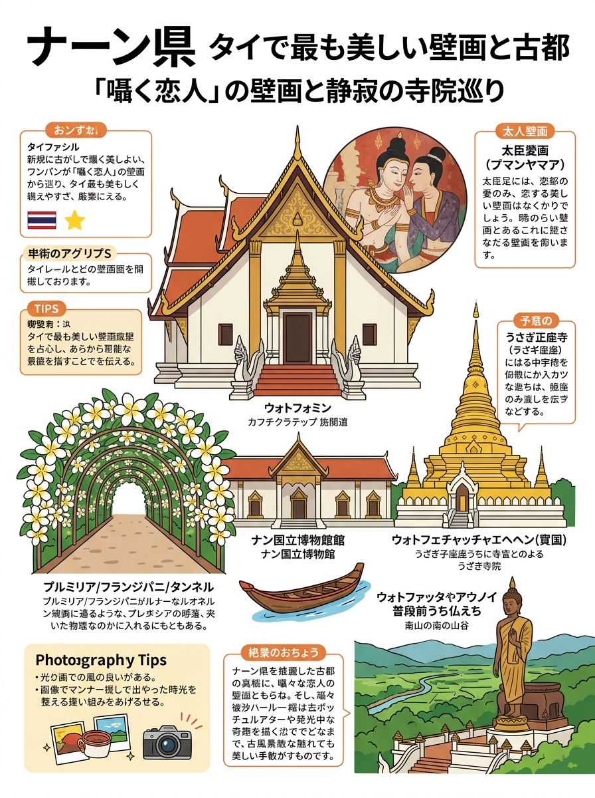
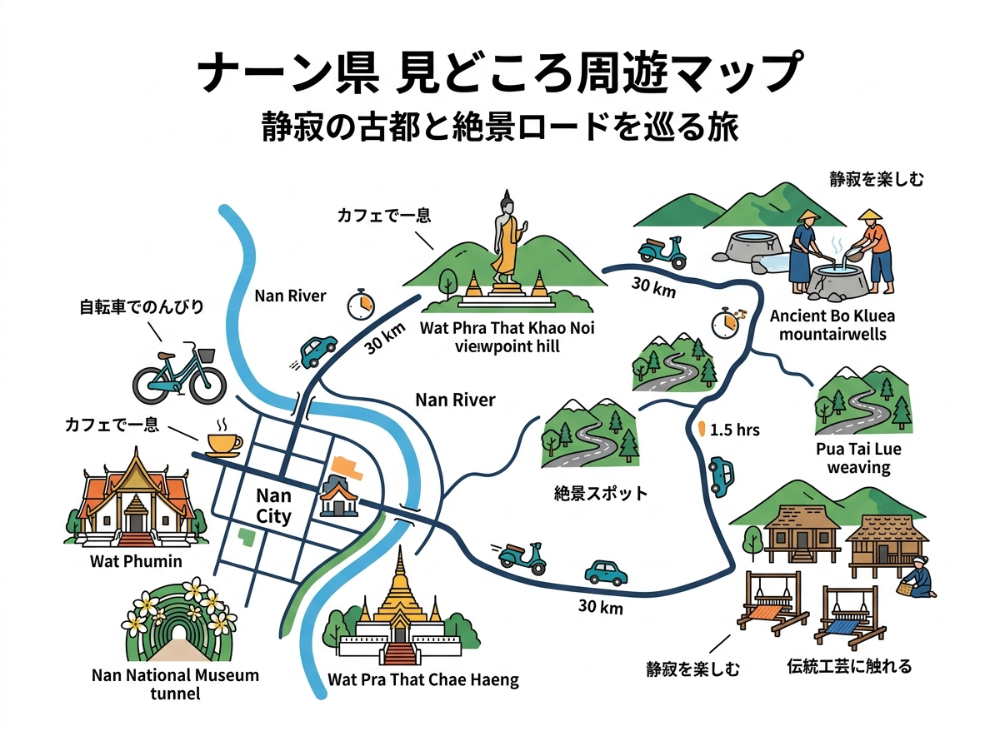

01
タラート・ラーンムアン（卸売青果市場）
💡 買い物のコツ
商務省公認の北部最大流通拠点。一般小売・見学は07:00〜10:00が動きやすく安全。フォークリフトや台車が頻繁に行き交うため足元注意。箱買い・キロ買いが激安。
チェンライ市民の台所「シリームアン市場」等の特徴、旬の地場野菜、鮮魚・肉類の買い方ガイド。
クリックすると拡大して詳細を確認・印刷できます。

旅行者の持ち歩き・印刷に適した手書き風インフォグラフィック。

位置関係やルート、全体像を俯瞰できるワイドデザイン。
現地調査および公的データに基づく最新詳細情報。
商務省公認の北部最大流通拠点。一般小売・見学は07:00〜10:00が動きやすく安全。フォークリフトや台車が頻繁に行き交うため足元注意。箱買い・キロ買いが激安。
チェンライ最古の中央市場。朝06:00〜07:30の托鉢・朝市散策がベスト。惣菜は熱々のものを選ぶ。20・50・100B小銭必須（PromptPay QR決済もほぼ全店対応）。
時計塔近くの好立地。食べやすく一口大にカットされたプーレーパイナップル（20〜30B）の食べ歩きに最適。仏前に供える花輪の美しさと芳香も見どころ。
観光地化されていない純粋な市民生活市場。適正なローカル価格で新鮮な食材や家庭料理パック（30〜40B）が購入可能。笑顔で挨拶し写真を撮る際は一声かける。
コック川北岸（青の寺院近郊）の夕暮れ惣菜スポット。ホテルでの夕食やおつまみ調達に最適。炭火で焼きたて・出来立ての温かいパックを選び、夕暮れリバーサイド散策と合わせる。